Jun-Hyeok Seo
I am a first-year Ph.D. student in the Department of Artificial Intelligence at Kyungpook National University, advised by Prof. Dong-Gyu Lee at the KNU Computer Vision & Machine Intelligence Lab.
Prior to KNU, I received my B.S. degree from the Department of Computer Engineering at Kumoh National Institute of Technology, advised by Prof. Hyeonju Yoon. My research focuses on human-centric AI and computer vision.
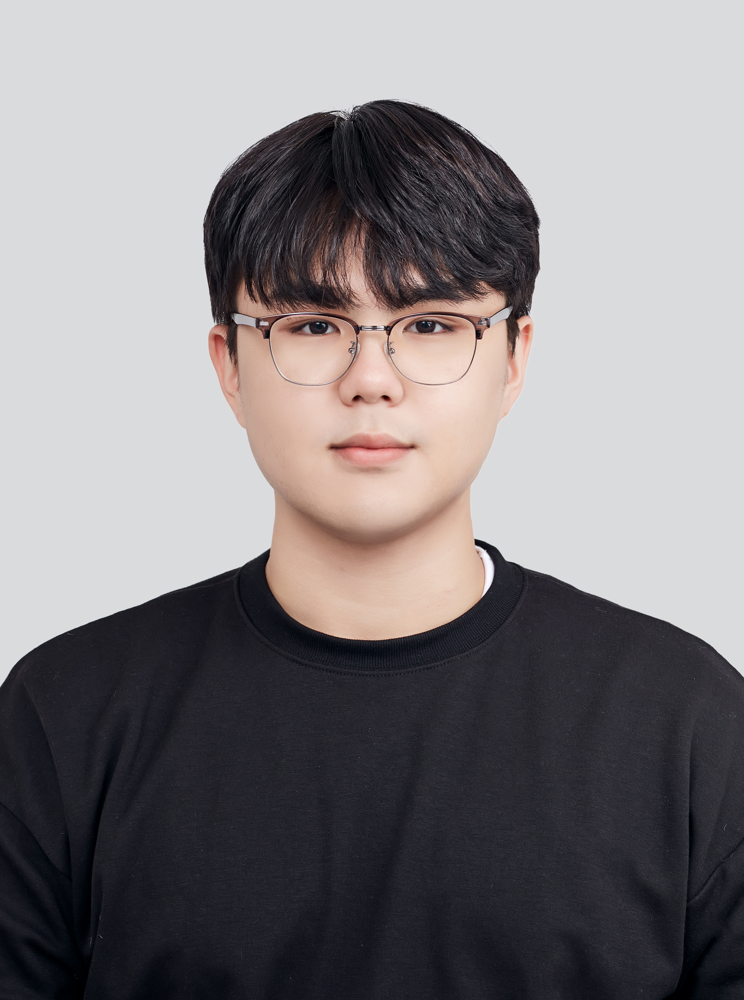
News
- May 2026One paper is under review for Conference on Neural Information Processing Systems (NeurIPS).
- Jan 2026One paper is under review for IEEE Journal of Biomedical and Health Informatics (JBHI).
- Oct 2025Received the Top Prize from the AI Convergence Safety Idea Competition by KNU.
- Sep 2025I was selected as a Full Scholarship Awardee for my Ph.D. program at KNU.
- Sep 2025One paper was presented at Korea Artificial Intelligence Conference (KAIC).
- Aug 2025Received the Encouragement Prize from the AI Hackathon Competition by CNU.
- Jul 2025One paper was presented at IEEE/CVF Conference on Computer Vision and Pattern Recognition Workshops (CVPRw).
- Jun 2025Received the 3rd Place in the VizWiz Zero-Shot Image Classification Grand Challenge at CVPR Workshops 2025.
- Apr 2025One paper was presented at KIISE Transactions on Computing Practices (KTCP).
- Dec 2024Received the Best Presentation Paper Award at Korea Software Congress (KSC).
- Sep 2024Received the Merit Scholarship (IH003) from KNU.
- Jun 2024Received The Mayor of Daegu Metropolitan City Award at the Daegu Public Data Startup Competition.
- Mar 2024Joined Computer Vision and Machine Intelligence Lab. at Kyungpook National University.
- Mar 2024Received the Merit Scholarship (IH003) from KNU.
Publications
* indicates equal contribution. † indicates the corresponding author.
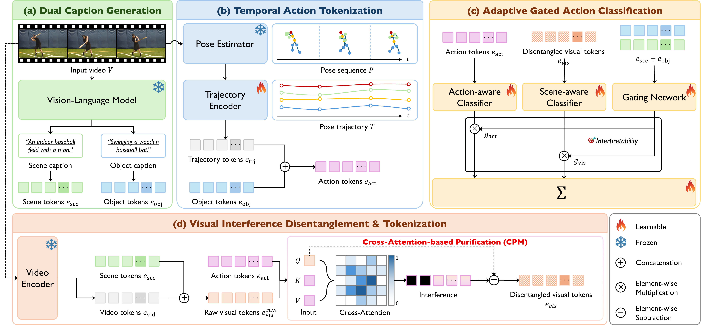
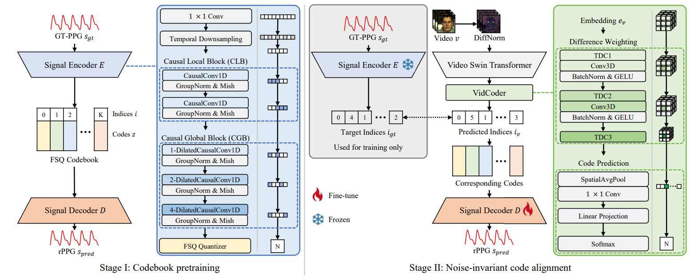
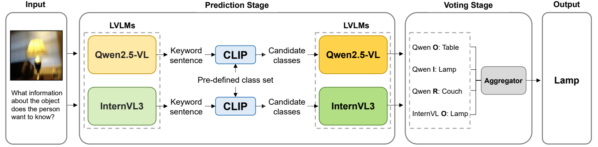
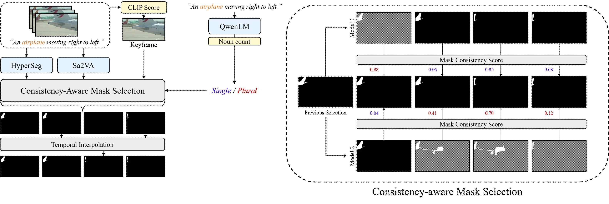
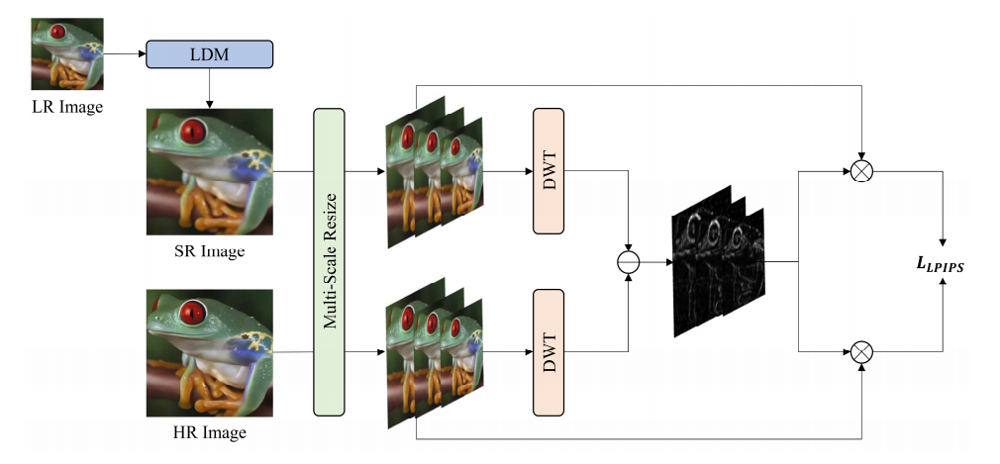
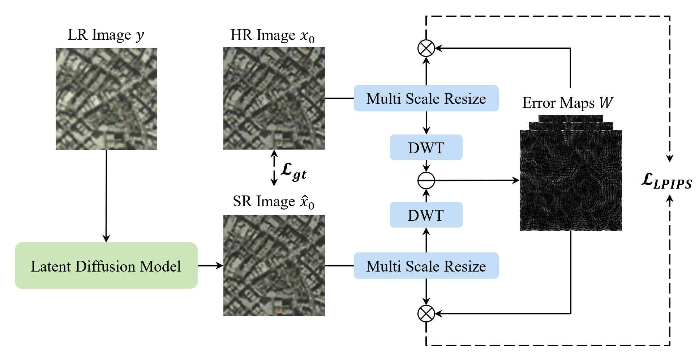
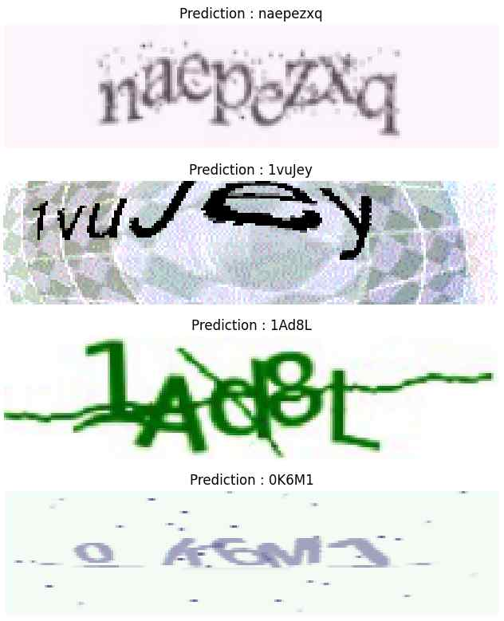
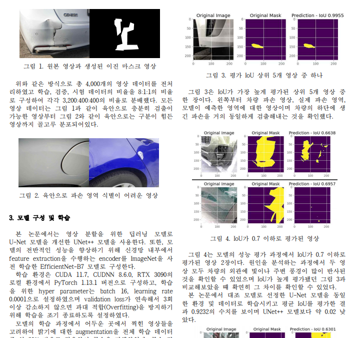
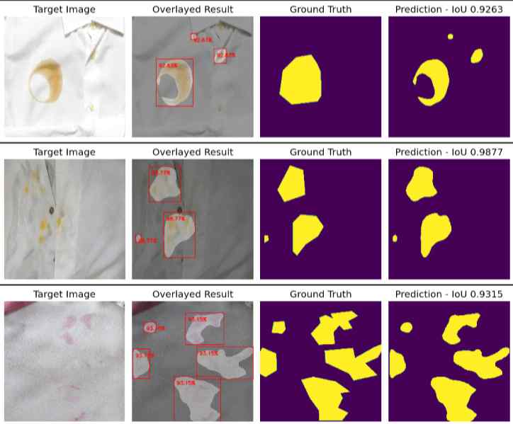
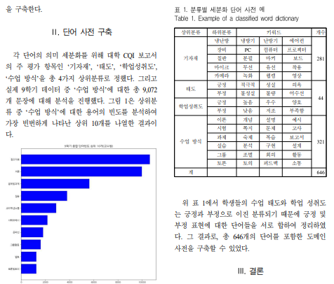

Education
Integrated M.S.-Ph.D. in Artificial Intelligence
Kyungpook National University
Mar. 2024 - Present | Daegu, Korea
Integrated M.S.-Ph.D. in AI Safety Convergence (Minor)
Kyungpook National University
Mar. 2024 - Present | Daegu, Korea
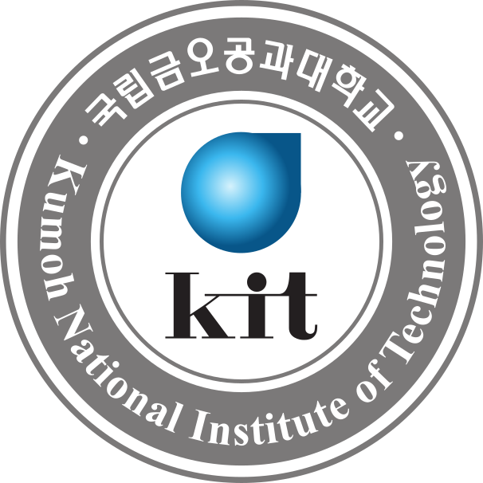
B.S. in Computer Engineering
Kumoh National Institute of Technology
Mar. 2020 - Feb. 2024 | Gumi, Korea
Experience
Technology Transfer
Happyaging
Jul. 2025 - Dec. 2025 | Daegu, Korea
Undergraduate Tutor
Kyungpook National University
Mar. 2025 - Jul. 2025 | Daegu, Korea
Education Completion
LG Aimers
Jul. 2022 - Sep. 2022 | Online
Web Publishing Team
TimeComs
Jul. 2022 - Sep. 2022 | Gumi, Korea
Facilities Management Department - Data Processing
WONIK QnC
Jul. 2021 - Sep. 2021 | Gumi, Korea
Freshmen Mentor
Kumoh National Institute of Technology
Mar. 2021 - Feb. 2022 | Gumi, Korea
Achievements
- Doctoral Program Full Scholarship from KNU, 2025-2
- Merit Scholarship (IH003) from KNU, 2024-2
- Merit Scholarship (IH003) from KNU, 2024-1
- Top Prize, AI Convergence Safety Idea Competition by KNU, 2025
- 3rd Place Winner, VizWiz Zero-Shot Image Classification Grand Challenge in CVPR 2025, 2025
- Encouragement Prize, AI Hackathon Competition by CNU, 2025
- The Mayor of Daegu Metropolitan City Award, Daegu Public Data Startup Competition, 2024
- Best Presentation Paper Award, Korea Software Congress, 2024
- Bronze Award for Outstanding Paper, Proceedings of KIIT Conference, 2023
- Bronze Award for Outstanding Paper, Proceedings of KIIT Conference, 2023
- Silver Award for Outstanding Paper, Proceedings of KIIT Conference, 2022
- Gold Award for Outstanding Paper, Proceedings of KIIT Conference, 2022
- Data Analysis (CAIB226), Undergraduate, 2025-1
- Problem-Solving Skills and Algorithms (CAIB0230), Undergraduate, 2024-2